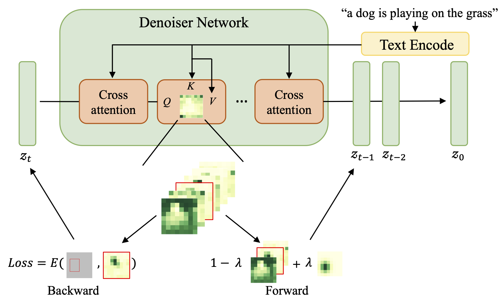
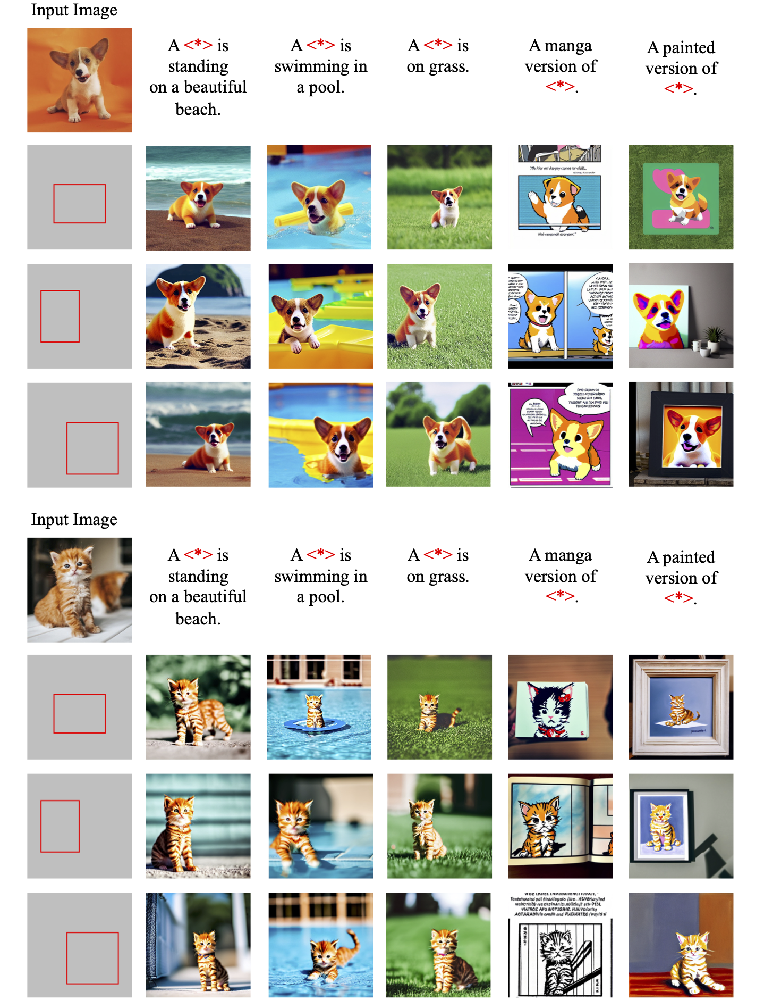

Oveview
We provide two different guidance, forward and backward, for layout control. Forward guidance combine the original cross-attention map with an additional inject attention as the layout guidance. On the other hand, backward guidance compute the loss between the cross-attention and bounding box following by back-propagation updating the latent variable directly.

Examples under VISOR
The model achieve to generate images with correct spatial relationship under VISOR protocol. Some examples are from here.

Real Image Editing
We achieve real image editing based on Dreambooth and Text Inversion. Specifically, we can change the context, location and size of the objects in the original image.
